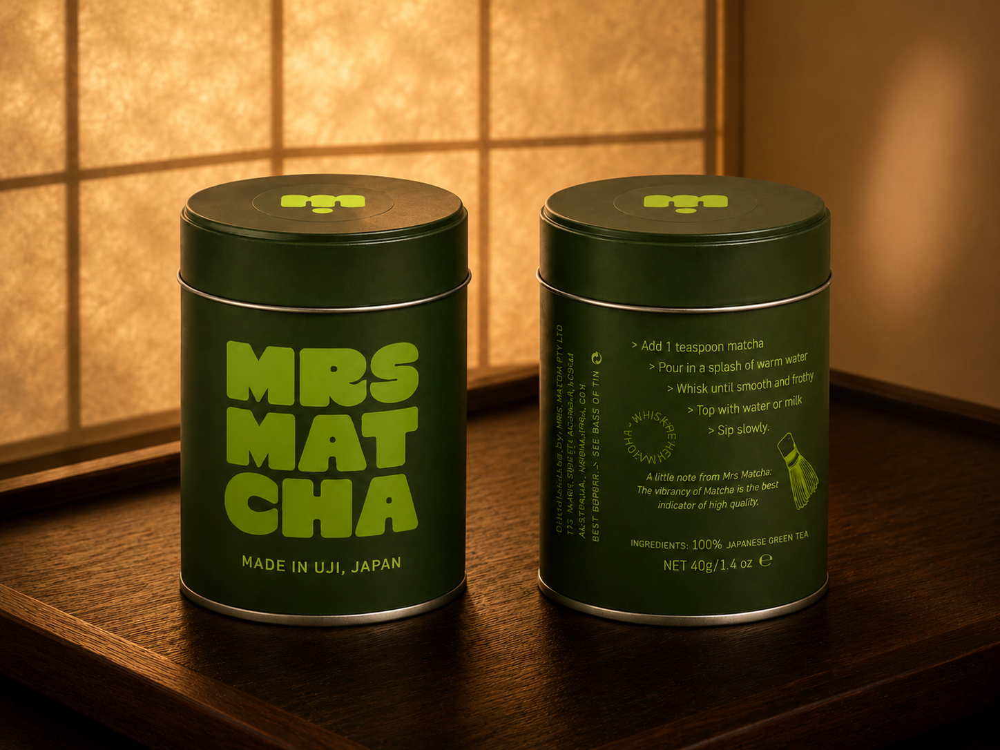
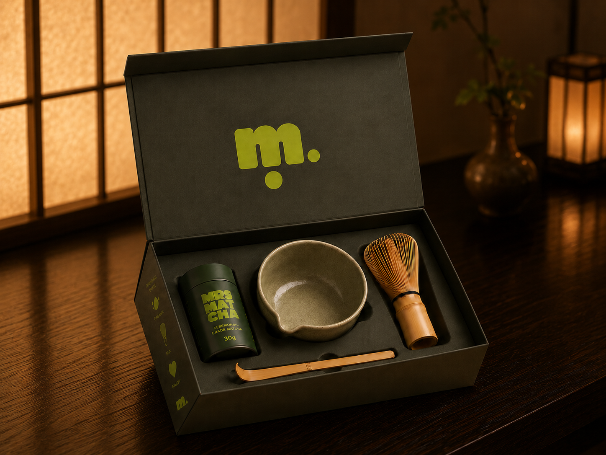
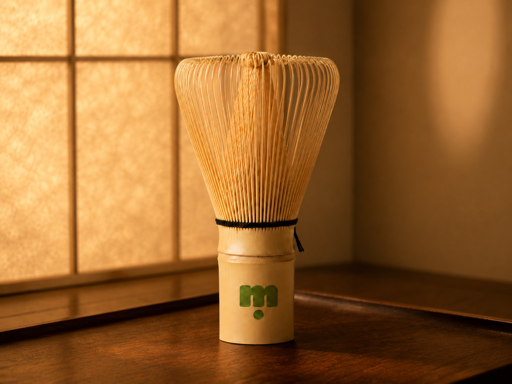
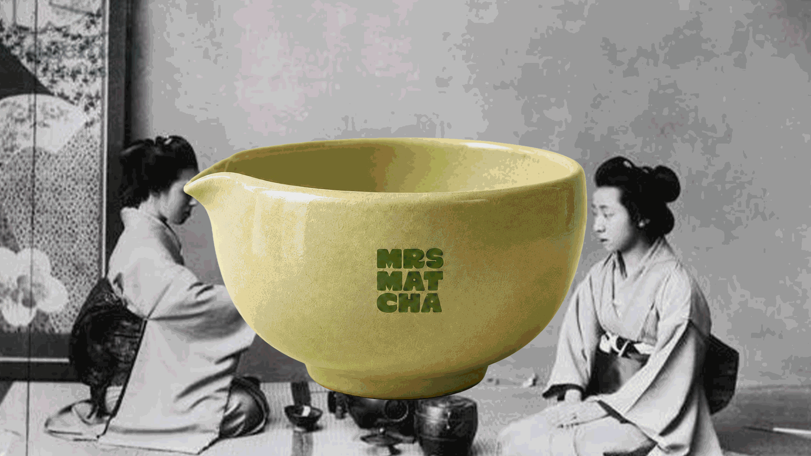
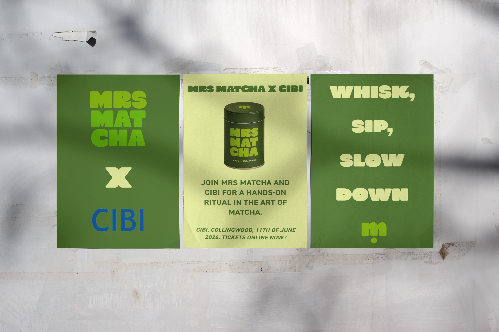

Mrs Matcha
Mrs Matcha transforms matcha from something that can feel intimidating or trend-led into a guided, contemporary ritual experience. The identity balances bold, playful visual language with respect for matcha's cultural depth, creating a product system that supports both education and everyday use.





- Brand Identity
- Packaging Design
- Product System
- Art Direction
- Starter kit and ceremonial range
- Latte tins, sticks and sachets
- Bamboo whisk, scoop and bowl
- User guidance and packaging system
2024
Design a brand identity that creates accessible entry points into a ritual-based product for contemporary audiences, while maintaining its cultural integrity, depth and meaning.
Matcha sits between tradition and trend. New users can find the ritual intimidating, so the brand needed to guide rather than oversimplify. The system was built to feel contemporary while still respecting cultural meaning.
Bold rounded typography and a green-led palette create a brand that feels confident, approachable and contemporary, while connecting back to the material qualities of matcha. Educational touchpoints sit within the packaging to help new users understand how to prepare and engage with the product.
A flexible packaging system covers ceremonial-grade matcha, everyday latte blends and starter products, creating clear entry points for different levels of user confidence. Ritual tools extend the brand beyond packaging.